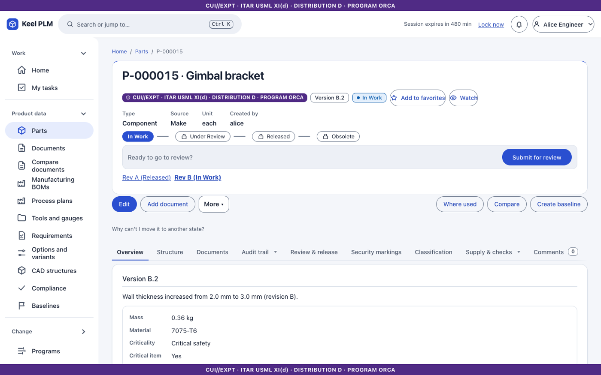
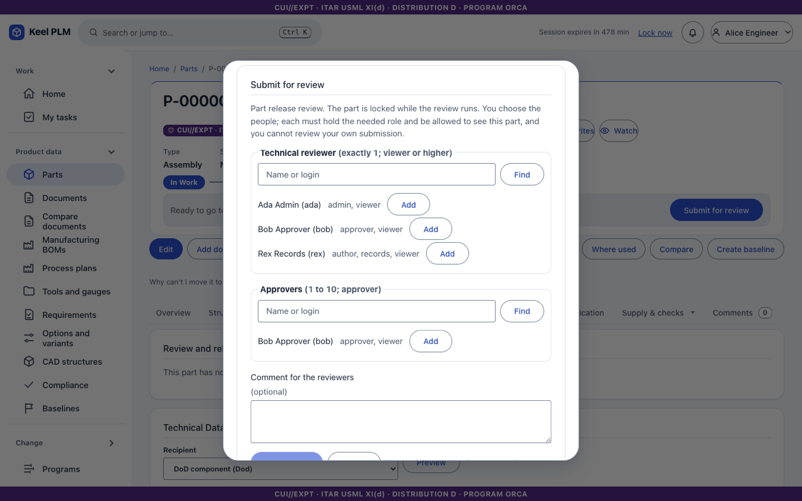
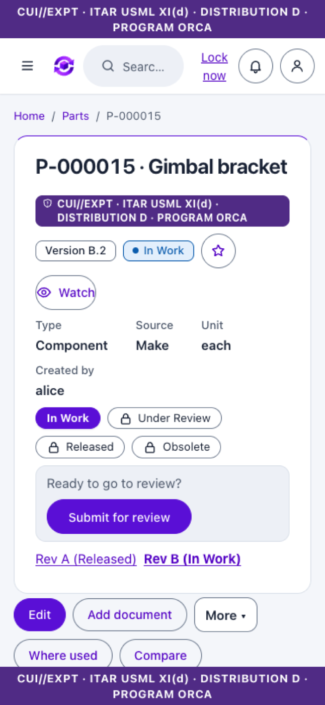
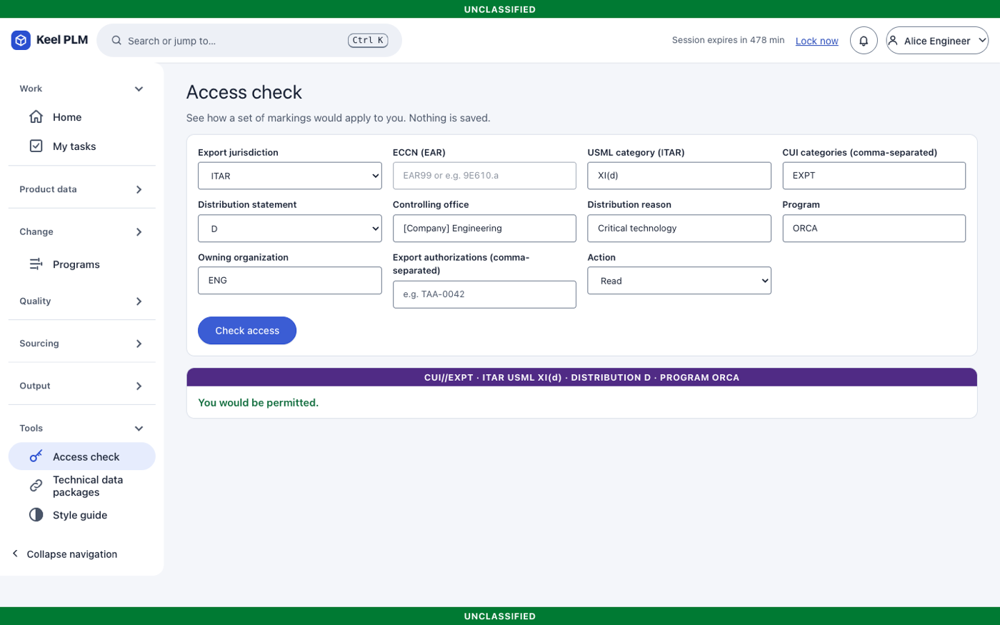
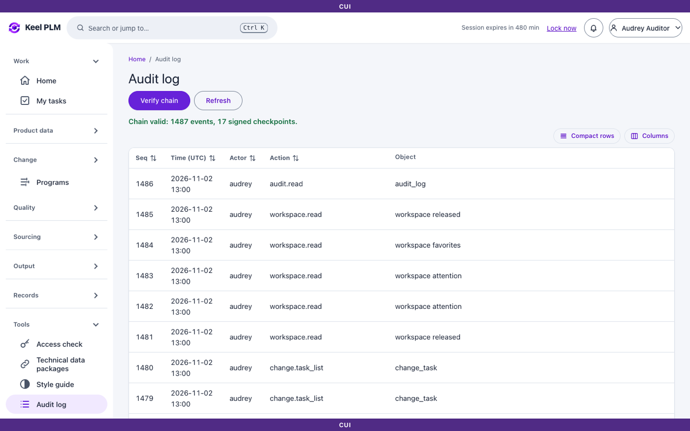

Product lifecycle management you can run yourself, for free.
Parts, documents, bills of materials, change control and e-signatures, built for teams whose data cannot leave the building. Runs on your own servers, with no internet connection needed.

Everything a product team needs, nothing it has to send out
Keel is designed for organizations that work with ITAR, EAR and CUI data and have to meet NIST SP 800-171 and CMMC Level 2 expectations. It is built to support that work. It is not itself a certification.
Parts and BOMs
Revisions, versions, engineering and manufacturing BOMs, variants, effectivity and baselines.
Documents and a secure vault
Files stored in your own object storage, stamped on download, with 3D viewing and visual comparison.
Change control
Change requests and notices, impact analysis, board review and a timeline of what changed and why.
Review in one click
Submit from the page header. Reviewers sign from a phone with a summary of exactly what they are signing.
Access by marking
Who can see what depends on markings, citizenship, programs and export authorizations, checked on every request.
Tamper-evident audit
Every action is written to a hash-chained log that an auditor can verify end to end.
Quality and suppliers
Nonconformances, corrective actions, deviations, supplier portal and sourcing lists.
CAD and migration
A FreeCAD connector with package check-out, and importers to move data in from other systems.
Made to be easy to use
Review and release live in the page header, approvals work on a phone, and forms show only what you need first.
One review step, right where you are
Every part, document and change shows where it stands and the one button that moves it on. Pick the people, add a note, and the reviewers are listed for you.

Approve from your phone
My tasks collects everything waiting on you. Open one, read what you are signing, and decide with large buttons. Your signature records exactly what you saw.

Access you can explain
Ask the system why someone can or cannot see an item, and it answers in plain words: the marking, the rule, the reason.

An audit trail you can prove
Verify the whole chain with one button. If anyone changed or removed a record, the check says exactly where.

Free to use, and a plan for keeping it that way
Keel is free to download and run on your own servers. The money to keep building it comes from people who want help, not from locking the product.
Self-hosted Keel
The whole product, every feature, on your own hardware.
- No per-seat fees
- No feature paywalls
- Full documentation and manual
- Community help on GitHub
Support and updates
A named contact, response times, upgrade help and security-fix notices.
- For teams that cannot be without it
- Annual plan
Setup and migration
We install it in your environment and move your parts, documents and history across.
- One-time project
- Includes training
Compliance help
Evidence packs and configuration guidance for audits against NIST SP 800-171 and CMMC.
- Mapped to your controls
The paid options are plans, not products on sale yet. Prices are not set. To say you are interested, open a discussion on GitHub.
Questions
Does it really cost nothing?
Yes. You run it on your own servers and pay nothing to us. You pay for your own hardware and for the identity provider and storage it uses.
Why would I ever pay?
Only if you want a person to help: install it, move your data, answer questions quickly, or prepare for an audit. The software itself is the same.
Does it need the internet?
No. It is designed to run air-gapped, and it ships with an offline install bundle.
What does it run on?
A .NET application with PostgreSQL, S3-compatible object storage and Keycloak for sign-in, packaged as a container image with a Helm chart.
Is it certified for CMMC or ITAR?
No. Software is not certified for those on its own. Keel is built to support the controls you must meet, and your organization's setup and practices decide the outcome.
Is this a finished product?
It is under active development. Try it with demo data first, and read the status notes in the repository before relying on it for real work.